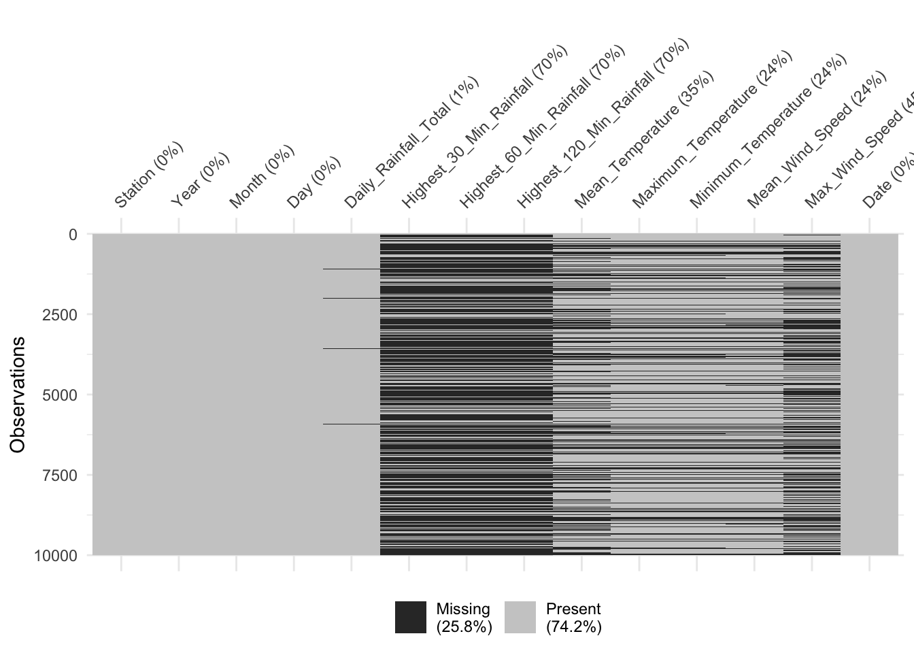
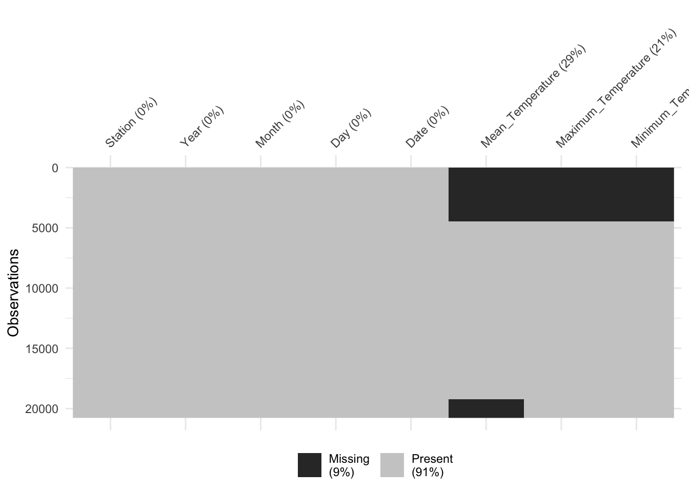

pacman::p_load(tidyverse, readr, visdat, plotly)Climate Change Confirmatory Data Analysis
The Task
Evaluation of R Packages: To evaluate and determine the necessary R packages required for Shiny application. Ensure that the selected packages are supported in the R CRAN. Choose packages that provide functionality relevant to your application’s objectives and requirements.
Preparation and Testing of R Codes: To prepare and test the specific R code that will be used in Shiny application. These codes should be capable of performing the desired data processing, analysis, or visualization tasks and should return the correct output as expected. Thorough testing is essential to ensure the reliability and accuracy of your application.
Determination of Parameters and Outputs: Identify the parameters (inputs) and outputs that will be exposed on the Shiny application’s user interface. This involves determining the user-interactable elements, such as input fields, sliders, dropdown menus, etc., as well as the expected outputs or results that users will receive after interacting with the application.
Selection of Shiny UI Components: Select appropriate Shiny user interface (UI) components for exposing the parameters and outputs determined above. Choose UI elements that are user-friendly, intuitive, and visually appealing. Consider using a combination of input and output components to create an interactive and engaging user experience.
weather <- readRDS("data/rds/weather.rds")weather <- weather %>%
rename_with(~ gsub(" ", "_", .x), everything())
glimpse(weather)Rows: 168,836
Columns: 13
$ Station <chr> "Admiralty", "Admiralty", "Admiralty", "Admir…
$ Year <dbl> 2009, 2009, 2009, 2009, 2009, 2009, 2009, 200…
$ Month <dbl> 1, 1, 1, 1, 1, 1, 1, 1, 1, 1, 1, 1, 1, 1, 1, …
$ Day <dbl> 1, 2, 3, 4, 5, 6, 7, 8, 9, 10, 11, 12, 13, 14…
$ Daily_Rainfall_Total <chr> NA, NA, NA, NA, NA, NA, NA, NA, NA, NA, NA, N…
$ Highest_30_Min_Rainfall <chr> NA, NA, NA, NA, NA, NA, NA, NA, NA, NA, NA, N…
$ Highest_60_Min_Rainfall <chr> NA, NA, NA, NA, NA, NA, NA, NA, NA, NA, NA, N…
$ Highest_120_Min_Rainfall <chr> NA, NA, NA, NA, NA, NA, NA, NA, NA, NA, NA, N…
$ Mean_Temperature <chr> NA, NA, NA, NA, NA, NA, NA, NA, NA, NA, NA, N…
$ Maximum_Temperature <chr> NA, NA, NA, NA, NA, NA, NA, NA, NA, NA, NA, N…
$ Minimum_Temperature <chr> NA, NA, NA, NA, NA, NA, NA, NA, NA, NA, NA, N…
$ Mean_Wind_Speed <chr> NA, NA, NA, NA, NA, NA, NA, NA, NA, NA, NA, N…
$ Max_Wind_Speed <chr> NA, NA, NA, NA, NA, NA, NA, NA, NA, NA, NA, N…weather <- weather %>%
mutate(Station = as.factor(Station),
Date = make_date(year = Year, month = Month, day = Day),
Month = lubridate::month(Date, label = TRUE),
Day = day(Date),
Daily_Rainfall_Total = as.numeric(Daily_Rainfall_Total),
Highest_30_Min_Rainfall = as.numeric(Highest_30_Min_Rainfall),
Highest_60_Min_Rainfall = as.numeric(Highest_60_Min_Rainfall),
Highest_120_Min_Rainfall = as.numeric(Highest_120_Min_Rainfall),
Mean_Temperature = as.numeric(Mean_Temperature),
Maximum_Temperature = as.numeric(Maximum_Temperature),
Minimum_Temperature = as.numeric(Minimum_Temperature),
Mean_Wind_Speed = as.numeric(Mean_Wind_Speed),
Max_Wind_Speed = as.numeric(Max_Wind_Speed))
glimpse(weather)Rows: 168,836
Columns: 14
$ Station <fct> Admiralty, Admiralty, Admiralty, Admiralty, A…
$ Year <dbl> 2009, 2009, 2009, 2009, 2009, 2009, 2009, 200…
$ Month <ord> Jan, Jan, Jan, Jan, Jan, Jan, Jan, Jan, Jan, …
$ Day <int> 1, 2, 3, 4, 5, 6, 7, 8, 9, 10, 11, 12, 13, 14…
$ Daily_Rainfall_Total <dbl> NA, NA, NA, NA, NA, NA, NA, NA, NA, NA, NA, N…
$ Highest_30_Min_Rainfall <dbl> NA, NA, NA, NA, NA, NA, NA, NA, NA, NA, NA, N…
$ Highest_60_Min_Rainfall <dbl> NA, NA, NA, NA, NA, NA, NA, NA, NA, NA, NA, N…
$ Highest_120_Min_Rainfall <dbl> NA, NA, NA, NA, NA, NA, NA, NA, NA, NA, NA, N…
$ Mean_Temperature <dbl> NA, NA, NA, NA, NA, NA, NA, NA, NA, NA, NA, N…
$ Maximum_Temperature <dbl> NA, NA, NA, NA, NA, NA, NA, NA, NA, NA, NA, N…
$ Minimum_Temperature <dbl> NA, NA, NA, NA, NA, NA, NA, NA, NA, NA, NA, N…
$ Mean_Wind_Speed <dbl> NA, NA, NA, NA, NA, NA, NA, NA, NA, NA, NA, N…
$ Max_Wind_Speed <dbl> NA, NA, NA, NA, NA, NA, NA, NA, NA, NA, NA, N…
$ Date <date> 2009-01-01, 2009-01-02, 2009-01-03, 2009-01-…weather[duplicated(weather),]# A tibble: 0 × 14
# ℹ 14 variables: Station <fct>, Year <dbl>, Month <ord>, Day <int>,
# Daily_Rainfall_Total <dbl>, Highest_30_Min_Rainfall <dbl>,
# Highest_60_Min_Rainfall <dbl>, Highest_120_Min_Rainfall <dbl>,
# Mean_Temperature <dbl>, Maximum_Temperature <dbl>,
# Minimum_Temperature <dbl>, Mean_Wind_Speed <dbl>, Max_Wind_Speed <dbl>,
# Date <date>weather %>%
sample_n(10000) %>%
vis_miss()
temp <- weather %>%
select(Station, Year, Month, Day, Date, Mean_Temperature, Maximum_Temperature, Minimum_Temperature) %>%
filter(Year %in% c("1983", "1993", "2003", "2013", "2023"))
glimpse(temp)Rows: 20,774
Columns: 8
$ Station <fct> Admiralty, Admiralty, Admiralty, Admiralty, Admira…
$ Year <dbl> 2013, 2013, 2013, 2013, 2013, 2013, 2013, 2013, 20…
$ Month <ord> Jan, Jan, Jan, Jan, Jan, Jan, Jan, Jan, Jan, Jan, …
$ Day <int> 1, 2, 3, 4, 5, 6, 7, 8, 9, 10, 11, 12, 13, 14, 15,…
$ Date <date> 2013-01-01, 2013-01-02, 2013-01-03, 2013-01-04, 2…
$ Mean_Temperature <dbl> 27.0, 26.3, 26.6, 27.0, 27.1, 28.1, 29.1, 26.6, 26…
$ Maximum_Temperature <dbl> 32.0, 30.8, 31.4, 30.9, 30.2, 33.0, 33.4, 31.7, 31…
$ Minimum_Temperature <dbl> 23.6, 23.2, 24.8, 24.5, 25.0, 24.5, 25.4, 21.9, 22…vis_miss(temp, cluster = TRUE)